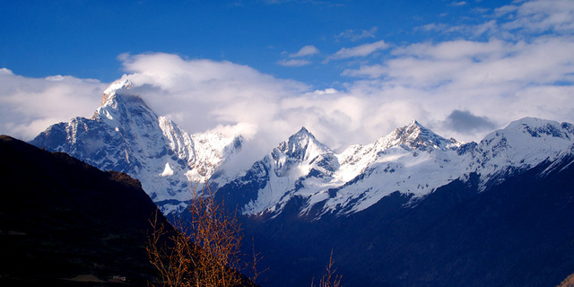

国内热门推荐
-
- 九寨沟
- 世界自然遗产、国家重点风景名胜区、 国家AAAAA级旅游景区、国家级自然保护区、国家地质公园、世界生物圈保护区网络， 是中国第一个以保护自然风景为主要目的的自然保护区
- 推荐指数：5颗星
旅游价格：1000元起
江南水乡

江南的水是最有名的，江南小镇像是浮在水面上一样，整个城镇都笼罩在烟雨朦胧之中。
早期的时候，听着乌镇里传来的属于早晨的活力,
安逸的慢节奏生活使你远离城市的喧嚣，重归自然，洗涤你的心灵。
建议游玩地点:
杭州西湖，乌镇，苏堤，白堤,天目湖，太湖湾，苏州园林
费用：500元起
冰雪之国

"北国风光，千里冰封，万里雪飘"如果你喜欢冰雪，你就不应该错过这个专栏。
浪漫的童话小镇，挂满晶莹雪花的雾凇岛，常年冰雪覆盖神秘莫测的长白山，最北端的魅力雪村，
冰雪奇缘的冰城--哈尔滨。。。
建议游玩地点:
雪乡（双峰林场），雾凇岛，长白山，雪村，哈尔滨，伊布，亚布力，呼伦贝尔
费用：1500元起
巍峨之山

地大物博，区域辽阔，巍峨连绵起伏的山脉在中国并不稀奇，
但是，还有一些山脉是值得你去慢慢鉴赏，品玩的。五岳之首的泰山--自然景观雄伟壮丽，历史文化博大精深，
梅里雪山--在月光如水的夜里，高洁雄奇的雪峰，直指苍穹，冷艳而超凡脱俗，黄山--黄山集泰山之雄伟、
华山之险峻、恒山之烟云、庐山之飞瀑、雁荡之巧石、峨嵋之秀丽于一体，庐山--素有“匡庐奇秀甲天下”之美誉，
与鸡公山、北戴河、莫干山并称四大避暑胜地。
建议游玩地点:
珠穆朗玛峰中国段，梅里雪山，三神山，泰山，黄山，庐山，乔戈里峰
费用：1000元起
浩渺之水
"桂林山水甲天下"中国的水有很多，秀清奇是它的基本特征，桂林的水独具一格，经风化和溶蚀,终于形成了神姿仙态的峰林,
幽深瑰丽的溶洞和神秘莫测的地下河.这些特殊的地貌与景象万千的漓江及其周围美丽迷人的田园风光融为一体,
形成了独具一格、驰名中外的“山青、水秀、洞奇、石美”的“桂林山水”
建议游玩地点:
桂林
费用：1000元起